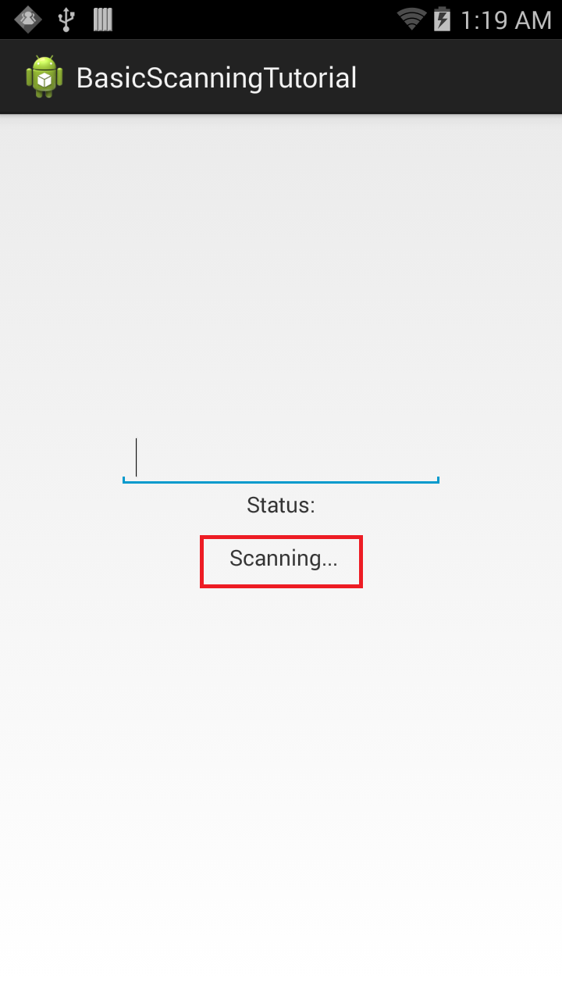
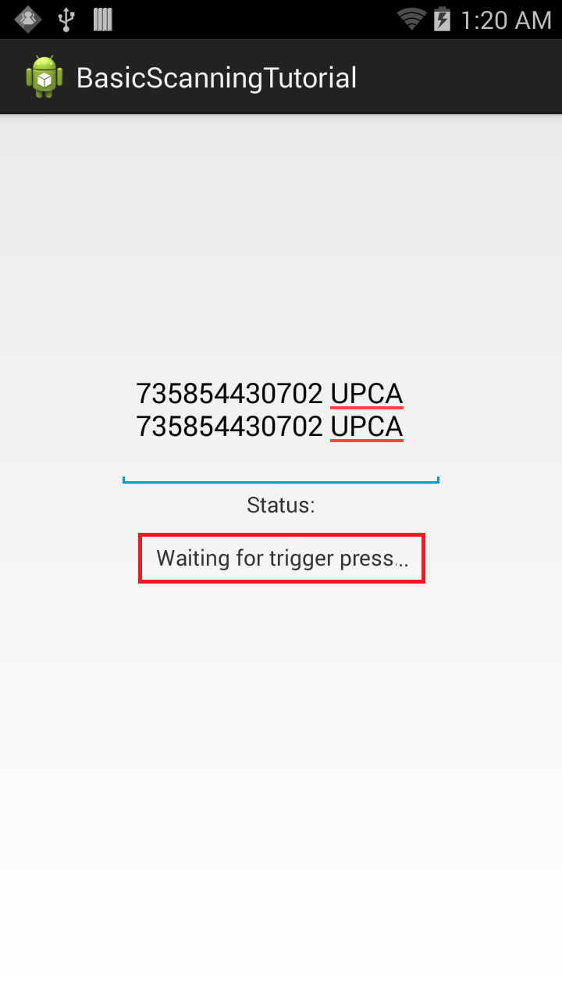

Running the Application
Connect the device to a USB port on the development host. The EMDK runtime is preloaded on Zebra devices and ready to run EMDK applications. Note: The device must be in USB Debug mode.
Run the application. The the scanner is enabled (scan status: IDLE) and a status message "Waiting for trigger press..." appears in the TextView field.

Click to enlarge; ESC to exit.Pressing the scan trigger executes the status listener code. The status changes to "Scanning..." as displayed in the Status TextView:

Click to enlarge; ESC to exit.Once scanning completes, release the scan trigger. Data populates the EditText field and status returns to "Waiting for trigger press..." as displayed in the Status TextView field:

Click to enlarge; ESC to exit.
This is how Barcode/Scanning APIs can be used to perform Basic Scanning operations on Zebra devices without using the Profile Wizard.
Important Programming Tips
Edit the manifest
Be sure to make the following required changes in the application's AndroidManifest.xml:
Note:
- Include the permission for EMDK:
<uses-permission android:name="com.symbol.emdk.permission.EMDK"/>Note:
- Use the EMDK library:
<uses-library android:name="com.symbol.emdk"/>Use DataWedge v1.7.12 or higher to test the
ProfileManager.processProfile()for DataWedge profiles.
Edit the build.gradle
Make the following required changes in the application's build.gradle file:
>Note:
>* Include the dependency for EMDK:
compileOnly ’com.symbol:emdk:+’
Content Backup
Once the barcode is enabled, the read method is called on the scanner and the scanning API starts an asynchronous scan. The method puts the scanner in a state in which it can be turned ON either automatically or by pressing a hardware trigger as determined by the Scanner.TriggerType. The data notification must registered in order to scan and get the scan data. The read request can be canceled by issuing a cancelRead. If a read() is submitted while another read is pending, the method call fails. Therefore, Zebra recommends checking whether a read is pending by calling isReadPending() before submitting a read(). A read() also can be submitted from within onData and onStatus events. If called within onStatus, it should be called only when IDLE status is received. If called within onData, then checking for isReadPending() is recommended.
Note: The
readmethod allows only a single barcode scan. If multiple scans are desired, thereadmethod must be called multiple times.
What's Next
After completing this basic tutorial, the next logical step might be to explore the Barcode/Scanning APIs in depth, and use them to perform advanced scanning operations.
-->